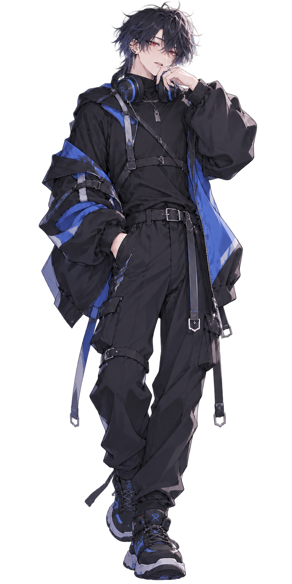

QUARTET
「別に仲良くねぇよ。長いだけ。」
BLUE × BLACK

名前： Ren / レン
年齢： 19歳
誕生日： 8月21日
身長： 178cm
活動： ゲーム配信中心
メインゲーム： VALORANT / APEX / FPS
イメージカラー： 青 × 黒
好きなもの： 深夜のゲーム / 炭酸 / ラーメン
苦手なもの： 早起き / ホラー / 負けを認めること
所属： QUARTET
一見すると冷静でクールだが、 仲の良い相手にはかなり遠慮がないタイプ。 特にRiaが相手になると途端に子どもっぽくなり、 しょうもないことで張り合っていることも多い。
ゲーム中は普段より真面目で、 周囲を見ながら状況を判断するのが得意。 誰かが勢いで突っ込んでいくと文句を言いつつ、 結局最後まで付き合う。
面倒見の良さを指摘されると否定するが、 QUARTETの中では何だかんだ周囲をよく見ている。
VALORANT / APEX / GTA / Minecraft / 雑談 / コラボ
現在ランク： Ascendant 2
最高ランク： Immortal 1
現在ランク： Master
最高ランク： Master
ゲーム配信を中心に活動。 FPSではかなり真剣になり、 普段より口数が増えることも多い。 Riaとの配信では言い合いが絶えない一方、 ゲーム中の連携はかなり良い。
BEST FRIENDS / PARTNERS IN CRIME
長年一緒にゲームをしてきた二人。 普段の会話は言い合いや喧嘩のようになることが多く、 お互いに遠慮がない。
しかしゲームになると、 細かく説明しなくても相手の動きを察することがあり、 QUARTETの中でも特に息の合った連携を見せる。
Riaが落ち込んでいるときも、 Renは無理に理由を聞き出さない。 いつも通り接しながら、 Ria本人が話し始めるまで待つタイプ。
二人きりのときには、 Riaを「りっちゃん」と呼ぶこともある。
永遠の喧嘩相手。 言い合っている時間とゲームをしている時間が だいたい同じ。
Renが熱くなっているときでも 比較的冷静に話せる相手。 Renにとっても頼れる年上枠。
QUARTETのお姉さん。 Renが調子に乗っていると 軽くあしらわれることも。
Riaとの仲の良さを指摘されたときの定番の否定。 説得力はあまりない。
二人きりではRiaを 「りっちゃん」と呼ぶことがある。 人前で指摘されると誤魔化す。
Riaがゲーム中に勢いで突っ込むと 「待てって！」と言いながら、 結局Renも一緒に突っ込んでいく。
ホラーゲームはあまり得意ではない。 ただし本人は怖がっていないと言い張る。
負けを認めるまでが長い。 言い訳の種類だけは妙に豊富。